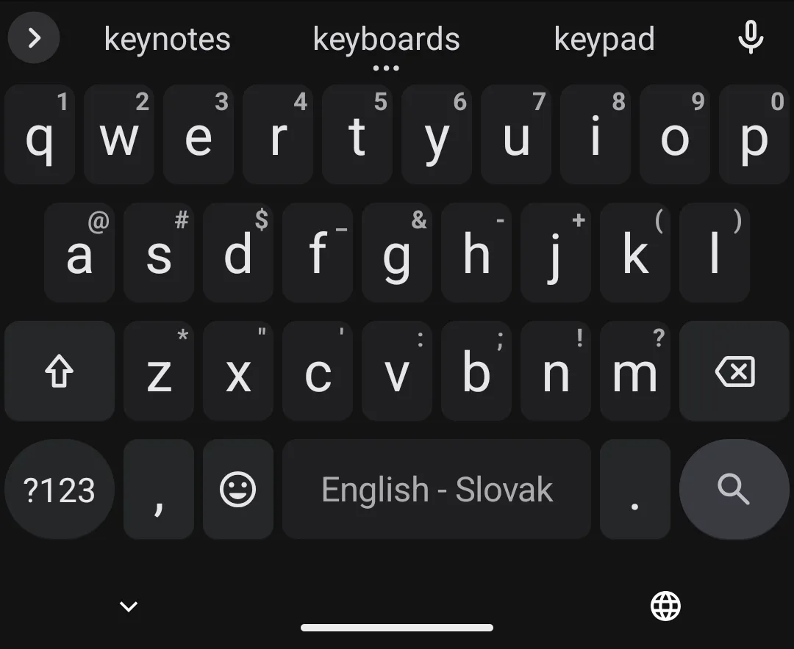

co umí už dnes
Klávesnice, na kterou jste zvyklí. Části, které jinde běží v cizím cloudu, tady zůstávají v telefonu. Je to beta: na každodenní psaní stačí, pokud vám nevadí občas nahlásit chybu.
strana a — dnes
- a1
vícejazyčné psaní tažením
V jedné větě přejedete slova ve dvou jazycích a jazyk nepřepínáte. Dnes je to slovenština a angličtina; čeština přijde jako další. Gesto čte FUTO Swipe, náš dekodér doplní diakritiku a podle předchozího slova vybere správného kandidáta.
- a2
další slovo odhadne telefon
Malá neuronová síť odhadne další slovo podle toho, co jste už napsali. Běží v telefonu, žádný server, kam by se cokoli posílalo, neexistuje.
- a3
diktování, aniž byste opustili klávesnici
Klepněte na mikrofon na konci pruhu s návrhy a mluvte. Klávesnice si zvuk nahraje sama, z telefonu, Bluetooth sluchátek, LE Audio sluchátek i z naslouchadel, a Offline Speech to Text ho přepíše přímo v zařízení. Dlouhé diktování pokračuje i po minutě.
- a4
jako Gboard
Barvy Material You, stejné znaky po podržení klávesy, napsané slovo uprostřed pruhu, řada číslic v polích pro heslo a žádné tiché opravy.
- a5
emoji podle libovolné části slova
Napište do hledání emoji „aketa“ a najde se raketa. Při psaní se v pruhu objeví i odpovídající emoji.
- a6
mezerník jako touchpad
Podržte mezerník a posouvejte kurzor. Když chcete, může místo toho přepínat jazyk.
- a7
pod kapotou HeliBoard
Historie schránky, rozložení pro jednu ruku i rozdělené, motivy, vlastní rozložení a fyzické klávesnice přišly z HeliBoardu.
strana b — připravujeme
- b1
Čeština, potom španělština a němčina, každá s vlastním slovníkem pro psaní tažením a s předpovědí slov
- b2
Menší klávesnice, které nastavíte velikost a polohu na tabletu i na rozloženém telefonu



z telefonu nic neodchází
Droneboard se na internet nedostane, protože mu to Android nikdy nepovolil.
- Žádné oprávnění
INTERNET, žádná analytika, žádná hlášení o pádech. - Nic nestahuje. Další slovníky se importují ze souboru.
- Zvuk z diktování jde do Offline Speech to Text ve stejném telefonu a nikam jinam.
- Kontakty v návrzích jsou volitelné a ve výchozím stavu vypnuté.
Ověřte si to sami: Nastavení → Aplikace → Droneboard → Oprávnění. Přístup k síti tam nenajdete.
jak přesně čte tahy
| test | top-1 | top-3 |
|---|---|---|
| Sada českých gest, knihovna gest od Googlu (jako v HeliBoardu) | 82,4 | 96,3 |
| Sada českých gest, Droneboard | 81,8 | 95,8 |
| Skutečný telefon, 106 zadaných slovenských a anglických slov | 82,1 | 92,5 |
instalace
Nejjednodušší je Zapstore: podepsané verze a aktualizace v jedné aplikaci, bez účtu.
- Nainstalujte si Zapstore ze stránky zapstore.dev.
- Otevřete Droneboard na Zapstore a nainstalujte ho.
- Spusťte Droneboard a podle pokynů ho zapněte.
- Pro diktování si nainstalujte i Offline Speech to Text.
Sestavte si ho sami ze zdrojového kódu. GPL-3.0.
novinky na nostru
Droneboard píše na nostr, otevřenou síť, kterou nevlastní žádná firma. Nejnovější příspěvky načte váš prohlížeč přímo z relayů; tato stránka nemá vlastní server a nenastavuje cookies.
- Profil na njump.me
- droneboard@cypherpunk.today
- Zapy: droneboard@pay.cypherpunk.today
poděkování
- klávesnice
- Fork HeliBoardu, který staví na OpenBoardu a AOSP LatinIME. GPL-3.0; některé soubory Apache-2.0 nebo CC-BY-SA-4.0.
- psaní tažením
- Pohání ho FUTO Swipe (swipe-library, GPL-3.0). Váhy modelu jsou pod licencí FUTO Model Weights License.
- nahrávání ze sluchátek
- Nahrávání přes Bluetooth a LE Audio pochází z aplikace Third Ear od stejného autora.
- diktování
- Offline Speech to Text, instaluje se zvlášť.
- seznamy slov
- FineWeb-2 (ODC-By), přefiltrované slovníky Hunspell.
- data emoji
- Anotace Unicode CLDR a data Signalu pro hledání emoji, přes aosp-dictionaries.
- písmo
- PT Sans od ParaType, SIL Open Font License.